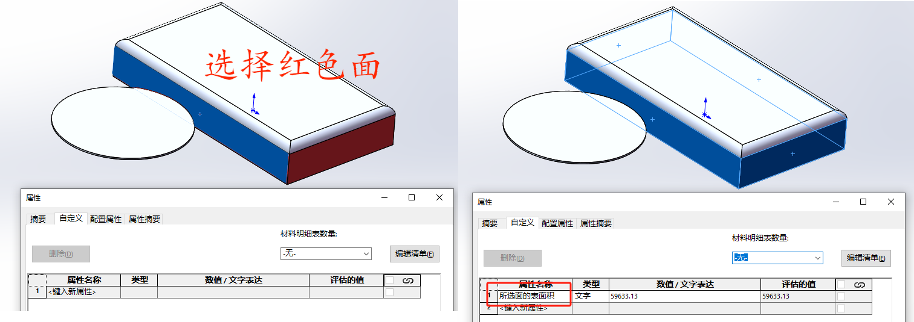

Sw_选择同颜色面
当我们需要对相同颜色或外观面进行统计处理时，可用考虑使用如下方法。
代码
//主函数
1
2
3
4
5
6
7
8
9
10
11
12
13
14
15
16
17
| public static void Function(SldWorks swApp)
{
if (swFace != null) GetFaceColor(swFace);
else { Console.WriteLine("swFace没有获得对象"); return; }
swModel.EditRebuild3();
SelectFaces(swPrt);
Measure swMeasure = (Measure)swModel.Extension.CreateMeasure();
string porp_name = "所选面的表面积";
string porp_value = (swMeasure.TotalArea * 1000000).ToString();
swModel.Extension.CustomPropertyManager[""].Add3(porp_name, (int)swCustomInfoType_e.swCustomInfoText, porp_value, (int)swCustomPropertyAddOption_e.swCustomPropertyDeleteAndAdd);
}
|
//获得所选面的颜色信息
1
2
3
4
5
| private static void GetbFaceColor(Face2 swFace)
{
double[] Values = (double[])swFace.MaterialPropertyValues;
target_R = Values[0] * 255; target_G = Values[1] * 255; target_B = Values[2] * 255;
}
|
//获得所选面的颜色信息
1
2
3
4
5
6
7
8
9
10
11
12
13
14
| private static void GetbFaceColor(Face2 swFace)
{
object[] Faces = (object[])swBody.GetFaces();
for (int j = 0; j < Faces.Length; j++)
{
Face swFace = (Face)Faces[j];
Values = (double[])swFace.MaterialPropertyValues;
R = Values[0] * 255;G = Values[1] * 255;B = Values[2] * 255;
if (R == target_R && G == target_G && B == target_B)
{
swSelMgr.AddSelectionListObject(swFace,swSelMgr.CreateSelectData());
}
}
}
|
使用

Q&A
目前只支持【面】对象的操作，这意味着如果你外观是添加在拉伸切除等【特征】对象上时，获取是无效的
1
2
3
4
5
6
7
| 外观层分为：顺序也决定那种外观在最外层（可见）
|——装配体
|——零件
|——面
|——曲面
|——实体
|——特征
|